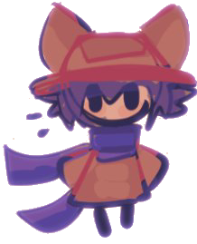

DarwinsNoThere
Estudiante.
Mándame una carta de amor (o mamadas) — darwinelgd.idk@gmail.comEscuela
PERSONAL
Aquí no hay nada. Como en mi cuenta bancaria.

Estudiante.
Mándame una carta de amor (o mamadas) — darwinelgd.idk@gmail.com